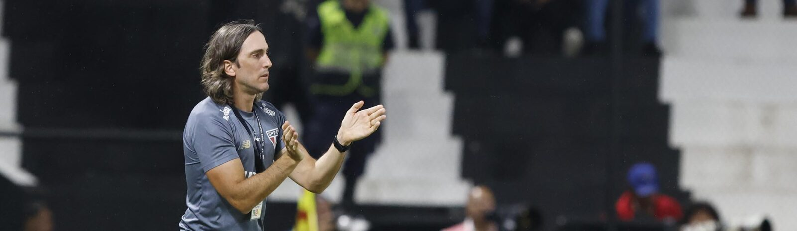

CONMEBOL Libertadores
Zubeldía celebra triunfo fora de casa
O técnico Luis Zubeldía concedeu entrevista coletiva após vencer o Libertad-PAR por 2 a 0, no Estádio Tigo La Huerta, em Assunção (PAR), nesta quarta-feira (23), pela terceira rodada da fase de grupos da CONMEBOL Libertadores.
O comandante comemorou o resultado fora de casa e a boa partida da equipe no torneio.
“É uma equipe que está em reconstrução, em crescimento, como falamos um tempo atrás. Hoje foi uma partida difícil. E, ainda assim, vejo jogadas do time que me representam e acredito que representam o São Paulo. Esse foi mais um passo dentro da competição que é a CONMEBOL Libertadores”, ressaltou.
Após esse duelo, o São Paulo chegou a 12 jogos de invencibilidade, a maior sequência invicta de sua história na CONMEBOL Libertadores, com 7 vitórias e 5 empates.
O Tricolor volta a campo no sábado (26), contra o Ceará, às 18h30, na Arena Castelão, em Fortaleza, pelo Campeonato Brasileiro.